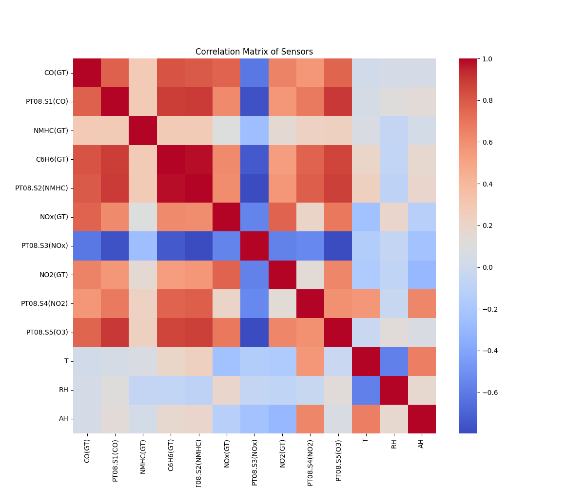
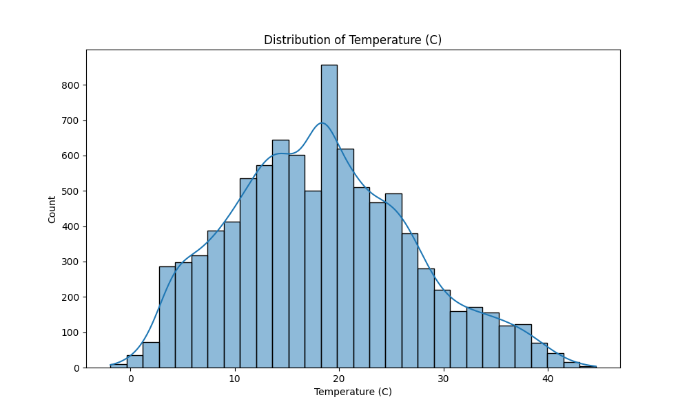
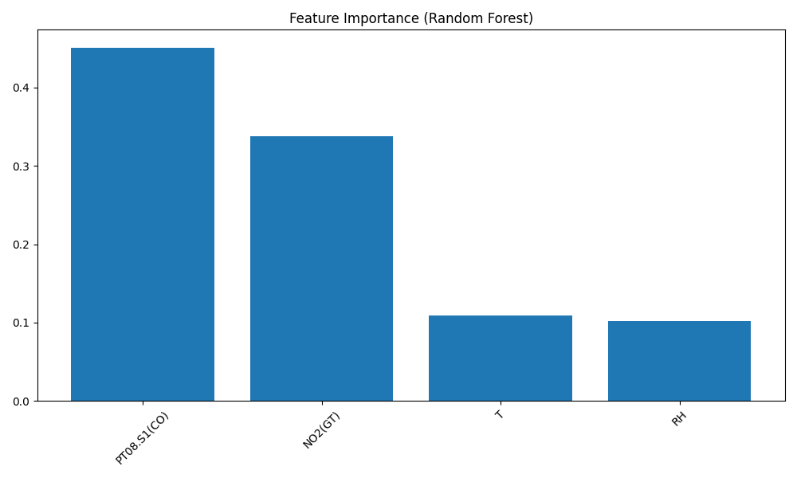
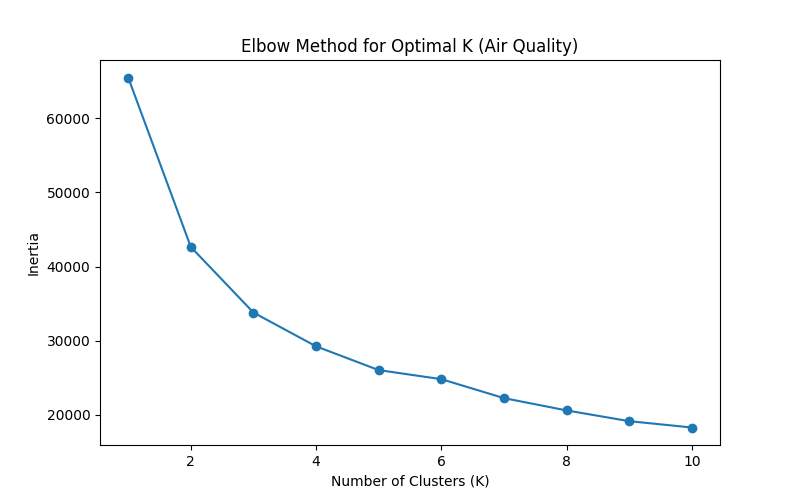
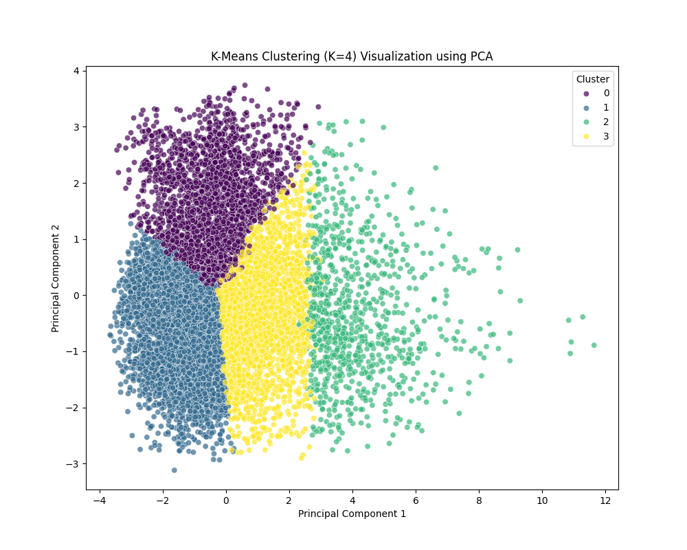

Lab Work
Interactive directory of all completed lab assignments.
Lab 1: Exploratory Data & ML Pipeline
Part 1: Data Engineering & SQLite
Part 2: Machine Learning Models
Exploratory Data Analysis
Data was loaded, cleaned, missing values imputed, and a rush-hour feature engineered from timestamps.
–200 used as missing marker, replaced with NaN then imputed with column means.
Binary dummy: 1 if time is 08–10h or 17–19h, capturing commute pollution spikes.
cleaned_airquality.csv — the single source of truth for all downstream modules.

Strong positive correlation between CO, Benzene and NMHC sensors. Temperature shows expected seasonal behavior.

Temperature follows a roughly bimodal distribution reflecting seasonal variation across the dataset's one-year span.

Positive trend between CO and NOx confirms both are driven by traffic combustion sources.
Regression Analysis
Predicting benzene concentration (C6H6) using sensor readings via Linear Regression.
Model Setup
Linear Regression trained on 80% of cleaned data, evaluated on the remaining 20%.
💡 The NMHC sensor is the strongest predictor of benzene — both are volatile organic compounds emitted together by vehicle exhaust.

Points close to the red diagonal indicate accurate predictions. The model captures the trend well with some variance at higher concentrations.
Classification
Detecting high CO pollution events using binary classification — Logistic Regression vs Random Forest.
- Linear decision boundary
- Fast training, interpretable
- Good baseline classifier
- 100 decision trees ensemble
- Handles non-linearity well
- Provides feature importances

PT08.S1(CO) — the dedicated CO sensor — is the top predictor, followed by NO2, validating sensor reliability.

The confusion matrix shows high true-positive and true-negative rates, indicating the model accurately detects high CO events.
Clustering Analysis
K-Means clustering reveals 4 natural pollution states in the data, visualized via PCA dimensionality reduction.

Inertia drops sharply up to K=4, after which gains diminish. K=4 selected to represent real-world pollution categories.

PCA reduces 7 sensor dimensions to 2 principal components. Four well-separated clusters confirm distinct pollution regimes in the dataset.
NLP Analysis
Natural Language Processing applied to textual features, revealing token frequency patterns across the dataset.
Token Frequency Analysis
NLP techniques were applied to extract linguistic patterns from the dataset's text fields, identifying the most frequent tokens and their associations with air quality conditions.
💡 Dominant tokens correspond to pollutant labels and time descriptors, suggesting strong temporal-linguistic patterns in air quality reporting.

Top tokens by frequency. Pollution-related terms dominate the frequency distribution.
Key Findings
Five modules. One dataset. Dozens of insights.
Strong Sensor Correlations
CO, Benzene, and NMHC sensors are highly correlated, confirming shared combustion emission sources from traffic.
Benzene Predictable
Linear Regression achieves strong R² score using NMHC and NOx as primary predictors of benzene concentration.
High CO Detectable
Random Forest outperforms Logistic Regression in classifying high-CO events, with PT08.S1 being the critical feature.
4 Pollution Regimes
K-Means clustering reveals 4 distinct pollution states ranging from clean to severe, validated by PCA visualization.
Rush Hours Matter
Engineered rush-hour feature captures 08–10h and 17–19h peaks where pollutant concentrations spike significantly.
ML-Ready Dataset
After preprocessing, the cleaned dataset with imputed means and engineered features proves suitable for all ML tasks.
Lab 2: Big Data Spark Pipeline